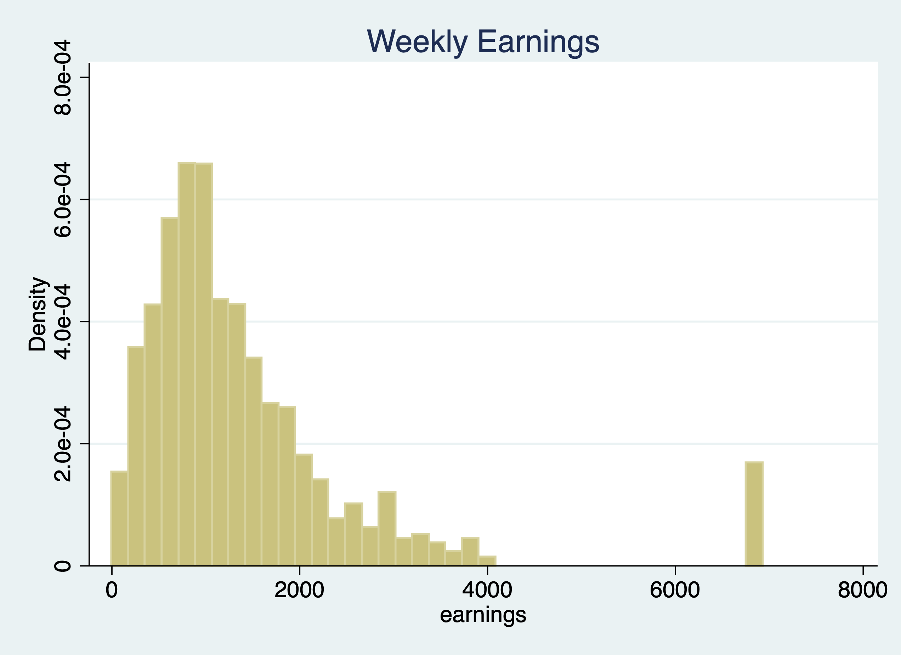

Chapter 3 Creating Variables
Mitchell Chapter 6
Overview 1. Generate and replace commands 2. Numeric expressions and functions 3. String expressions and functions 4. Recoding 5. Binary and Categorical variables 6. Date and Time functions 7. EGEN commands 8. Converting Strings to Numerics 9. Renaming and Reordering commands
The generate and replace will be the workhorses of creating and modifying variables We’ll deal with generating binary variables. We’ll look into missing data and how to handle it. Note: Please do not label your missing data, it just is a pain to deal with later The egen command is also a very practical and useful (I wish other software packages had this type of command). We’ll deal with strings and converting between numerics and strings.
3.1 Creating and changing variables
One of the most basic tasks is to create, replace, and modify variables. Stata provides some nice and easy commands to work with variable generation and modification relative to other statistical software packages: generate and replace. These will be the workhorses for the creation and modification of variables.
As we go through Mitchell’s Chapter 6, we’ll see that these are not the only two commands we will utilize. For example, Stata has a very helpful command called egen. It can be used to create new variables from old variables, especially when working with groups of observations. Egen becomes even more helpful when it is combined with bysort. We can sort our group and find the max, min, sum, etc. of a group of observations, which can come in handy when we are working with panel data. Futhermore, using indexes can make our generation commands more useful for creating lags or rebasing our data.
3.1.1 Generate command
The generate or gen command is one command that you may alredy have plenty of experience with, but there are some helpful tips when working with generate. What we’ll do first is to create a new variable called potential experience and potential experience squared.
Let’s look at ages for workers earning weekly wages.
cd "/Users/Sam/Desktop/Data/CPS"
use smalljul25pub, clear
summarize prtage if prerelg==1
generate pot_exp=prtage-16
summarize pot_exp if prerelg==1/Users/Sam/Desktop/Data/CPS
Variable | Obs Mean Std. Dev. Min Max
-------------+---------------------------------------------------------
prtage | 9,635 42.43778 14.74111 15 85
(28,617 missing values generated)
Variable | Obs Mean Std. Dev. Min Max
-------------+---------------------------------------------------------
pot_exp | 9,635 26.43778 14.74111 -1 69Look for outliers and generate a histogram for outliers

Now let’s create a new variable for potential experience squared. We have two options:
(28,617 missing values generated)
Variable | Obs Mean Std. Dev. Min Max
-------------+---------------------------------------------------------
pot_exp2 | 93,635 1269.006 1345.314 0 4761
(28,617 missing values generated)
Variable | Obs Mean Std. Dev. Min Max
-------------+---------------------------------------------------------
pot_exp2 | 93,635 1269.006 1345.314 0 4761Notice! Our age variable, prtage, is missing whent the value is -1. The data dictionary provides us the information that -1 is a holder for missing data. Please note that when missing values are “.”, we will see missings in an outlier check! Why? Because missing values are considered very large values. This is important because when creating binary or categorical variables through qualifiers, make sure you top code your qualifiers.
For example, if we are creating a binary on part-time vs full-time. We need to top code so we don’t count missing hours as full-time workers,
Alternatively, you can use the missing function.
Let’s generate weekly earnings and plot the data. The CPS data dictionary tells us that pternwa is the weekly earnings, but it needs to be divided by 100 to get two decimal places.
gen earnings=pternwa/100
histogram earnings if prerelg==1, title(Weekly Earnings)
graph export "jul_25_weekly_earnings.png", replace
Another helpful trick is the before and after options. It might be helpful to have the newly created variable next to a similar variable, so let’s drop our variable and generate it again with the after option
3.1.2 Replace
We use our replace command to modify a variable that has already been created. Similar to generate, you probably already have experience with replace, but we’ll go over some useful tips.
Qualifiers will be an essential part of your syntax when using the replace command.
Let’s generate a variable called marital status and look at married and nevermarried variables.
quietly cd "/Users/Sam/Desktop/Econ 645/Data/Mitchell"
quietly use wws, clear
tabulate married nevermarried | Woman never been
| married
married | 0 1 | Total
-----------+----------------------+----------
0 | 570 234 | 804
1 | 1,440 2 | 1,442
-----------+----------------------+----------
Total | 2,010 236 | 2,246 We’ll generate a new variable called maritalstatus.
I recommend generating a new categorical variable as missing instead of zero, because this prevents missing variables from being categorized as 0 when applicable.
We generally use qualifers “=, >, <, >=, <=, !” when working with replace. Let’s replace the marital status variable with married and nevermarried as qualifiers
replace maritalstatus = 1 if married==0 & nevermarried==1
replace maritalstatus = 2 if married==1 & nevermarried==0
replace maritalstatus = 3 if married==0 & nevermarried==0It’s always a good idea to double check the varilabes against the variables they were created from to make sure your categories are what they are supposed to be.
maritalstat |
us | Freq. Percent Cum.
------------+-----------------------------------
1 | 234 10.43 10.43
2 | 1,440 64.17 74.60
3 | 570 25.40 100.00
------------+-----------------------------------
Total | 2,244 100.00
----------------------------------------
| Woman never been married and
| married
maritalst | ----- 0 ---- ----- 1 ----
atus | 0 1 0 1
----------+-----------------------------
1 | 234
2 | 1,440
3 | 570
----------------------------------------What will be helpful is to label our values, but we’ll cover this next week.
We can also use the replace command with a continuous variable in the qualifier
Let’s create a new varible called over40hours which will be categorized as 1 if it is over 40 hours, and 0 if it is 40 or under.
We need to make sure we don’t include missing values so we need an additional qualifier besides hours > 40. We need to add !missing(hours).
Now let’s see the results.
over40hours | Freq. Percent Cum.
------------+-----------------------------------
0 | 1,852 82.60 82.60
1 | 390 17.40 100.00
------------+-----------------------------------
Total | 2,242 100.00
| Summary of usual hours worked
over40hours | Mean Std. Dev. Freq.
------------+------------------------------------
0 | 34.50054 9.0449086 1,852
1 | 50.123077 6.6961395 390
------------+------------------------------------
Total | 37.218109 10.509135 2,2423.2 Numeric expressions and functions
Our standard numeric expressions 1. addition +, 2. subtraction -, 3. multiplication *, 4. division /, 5. exponentiation ^, and 6. parantheses () for changing order of operation.
We also have some very useful numeric functions built into Stata:
The int() function removes any decimals.
The round() function rounds a number to the desired decimal place.Please note that this is different from Excel!!!
The round(x,y) rounds the numbers to the specified nearest value. Where x is your numeric and y is the nearest value you wish to round to.
For example: 1. if y = 1, round(-5.2,1)=-5 and round(4.5)=5 2. if y=.1, round(10.16,.1)=10.2 and round(34.1345,.1)=34.1 3. if y=10, round(313.34,10)=310 and round(4.52,10)=0
Note: if y is missing, then it will round to the nearest integer round(10.16)=10
The ln() function is our natural log function which we use a lot for transforming variables for elasticity estimates.
The log10() function is our logarithm base-10 function.
The sqrt() function is our square root function
display int(10.65)
display round(10.65,1)
display ln(10.65)
display log10(10.65)
display sqrt(10.65)10
11
2.3655599
1.0273496
3.2634338Please note int(10.65) returns 10, while round(10.65,1) returns 11.
3.2.1 Random Numbers and setting seeds
There are several random number generating functions in Stata.
runiform() is a random uniform distribution number generator has a distribution between 0 and 1.
rnormal(m,sd) is a random normal distribution number generator without arguments it will assume mean = 0 and sd = 1.
rchi2(df) is a random chi-squared distribution number generator where df is the degrees of freedom that need to be specified
Let’s look at some examples.
Setting seeds is important if you want someone to replicate your results, since a set seed will generate the same random number each time it is run.
*Set our seed
set seed 12345
*Random uniform distribution
gen runiformtest = runiform()
summarize runiformtest
*Random normal distribution
gen rnormaltest = rnormal()
gen rnormaltest2 = rnormal(100,15)
summarize rnormaltest rnormaltest2
*Random chi-squared distribution
gen rchi2test = rchi2(5)
summarize rchi2test Variable | Obs Mean Std. Dev. Min Max
-------------+---------------------------------------------------------
runiformtest | 2,246 .4924636 .2875376 .0007583 .9985869
Variable | Obs Mean Std. Dev. Min Max
-------------+---------------------------------------------------------
rnormaltest | 2,246 .018436 .9857847 -3.389103 3.372525
rnormaltest2 | 2,246 99.70718 14.77732 47.81653 154.2297
Variable | Obs Mean Std. Dev. Min Max
-------------+---------------------------------------------------------
rchi2test | 2,246 5.063639 3.322998 .1102785 29.242913.3 String Expressions and functions
Working with string can be a pain, but there are some very helpful functions that will get your task completed.
Let’s get some new data to work with strings and their functions.
We’ll format the names with left-justification 17 characters long.
quietly cd "/Users/Sam/Desktop/Econ 645/Data/Mitchell"
use "authors.dta", clear
format name %-17s
list name | name |
|----------------------|
1. | Ruth Canaale |
2. | Y. Don Uflossmore |
3. | thích nhất hạnh |
4. | J. Carreño Quiñones |
5. | Ô Knausgård |
|----------------------|
6. | Don b Iteme |
7. | isaac O'yerbreath |
8. | Mike avity |
9. | ÉMILE ZOLA |
10. | i William Crown |
|----------------------|
11. | Ott W. Onthurt |
12. | Olive Tu'Drill |
13. | björk guðmundsdóttir |
+----------------------+Notice white space(s) in front of some names and some names are not in the proper format (lowercase for initial letter instead of upper).
To fix these, we have a three string functions to work with.
The ustrtitle() function is the Unicode function to convert strings to title cases, which means that the first letter is always upper and all others are lower case for each word.
The ustrlower() is the Unicode function to convert strings to lower case.
The ustrupper() is the Unicode function to convert strings to upper case.
Please note that there are string function that do something similar but in ASCII. Our names are not in ASCII currently, so please note that not all string characters come in ASCII, but may come in Unicode: 1. strproper() 2. strlower() 3. strupper()
We’ll generate some names and format our strings to 23 length and left-justified
generate name2 = ustrtitle(name)
generate lowname = ustrlower(name)
generate upname = ustrupper(name)
format name2 lowname upname %-23s
list name2 lowname upname | name2 lowname upname |
|--------------------------------------------------------------------|
1. | Ruth Canaale ruth canaale RUTH CANAALE |
2. | Y. Don Uflossmore y. don uflossmore Y. DON UFLOSSMORE |
3. | Thích Nhất Hạnh thích nhất hạnh THÍCH NHẤT HẠNH |
4. | J. Carreño Quiñones j. carreño quiñones J. CARREÑO QUIÑONES |
5. | Ô Knausgård ô knausgård Ô KNAUSGÅRD |
|--------------------------------------------------------------------|
6. | Don B Iteme don b iteme DON B ITEME |
7. | Isaac O'yerbreath isaac o'yerbreath ISAAC O'YERBREATH |
8. | Mike Avity mike avity MIKE AVITY |
9. | Émile Zola émile zola ÉMILE ZOLA |
10. | I William Crown i william crown I WILLIAM CROWN |
|--------------------------------------------------------------------|
11. | Ott W. Onthurt ott w. onthurt OTT W. ONTHURT |
12. | Olive Tu'drill olive tu'drill OLIVE TU'DRILL |
13. | Björk Guðmundsdóttir björk guðmundsdóttir BJÖRK GUÐMUNDSDÓTTIR |
+--------------------------------------------------------------------+We still need to get rid of leading white spaces in front of the name. The ustrltrim() will get reid of leading blanks.
| name name2 name3 |
|--------------------------------------------------------------------|
1. | Ruth Canaale Ruth Canaale Ruth Canaale |
2. | Y. Don Uflossmore Y. Don Uflossmore Y. Don Uflossmore |
3. | thích nhất hạnh Thích Nhất Hạnh Thích Nhất Hạnh |
4. | J. Carreño Quiñones J. Carreño Quiñones J. Carreño Quiñones |
5. | Ô Knausgård Ô Knausgård Ô Knausgård |
|--------------------------------------------------------------------|
6. | Don b Iteme Don B Iteme Don B Iteme |
7. | isaac O'yerbreath Isaac O'yerbreath Isaac O'yerbreath |
8. | Mike avity Mike Avity Mike Avity |
9. | ÉMILE ZOLA Émile Zola Émile Zola |
10. | i William Crown I William Crown I William Crown |
|--------------------------------------------------------------------|
11. | Ott W. Onthurt Ott W. Onthurt Ott W. Onthurt |
12. | Olive Tu'Drill Olive Tu'drill Olive Tu'drill |
13. | björk guðmundsdóttir Björk Guðmundsdóttir Björk Guðmundsdóttir |
+--------------------------------------------------------------------+Let’s work with the initials to identify the initial. In small datasets this is easy enough, but for large datasets we’ll need to use some functions.
3.3.1 substr functions
One of the more practical string functions is the substr functions:
The usubstr(s,n1,n2) is our Unicode substring.
The substr(s,n1,n2) is our ASCII substring
Where s is the string, n1 is the starting position, n2 is the length
bcdLet’s find names that start with the initial with substr. We’ll start at the 2nd position and move 1 character. Let’s use ASCII and compare it to Unicode.
gen secondchar = substr(name3,2,1)
gen firstinit = (secondchar == " " | secondchar == ".") if !missing(secondchar)We might want to break up a string as well. This is helpful for names, addresses, etc. We can use the strwordcount function.
The ustrwordcount(s) counts the number of words using word-boundary rules of Unicode strings. Where s is the string input.
| name3 nameco~t |
|---------------------------------|
1. | Ruth Canaale 2 |
2. | Y. Don Uflossmore 4 |
3. | Thích Nhất Hạnh 3 |
4. | J. Carreño Quiñones 4 |
5. | Ô Knausgård 2 |
|---------------------------------|
6. | Don B Iteme 3 |
7. | Isaac O'yerbreath 2 |
8. | Mike Avity 2 |
9. | Émile Zola 2 |
10. | I William Crown 3 |
|---------------------------------|
11. | Ott W. Onthurt 4 |
12. | Olive Tu'drill 2 |
13. | Björk Guðmundsdóttir 2 |
+---------------------------------+Notice that there are three authors have a word count of 4 instead of 3 when it should be three.
To extract the words after word count, we can use the ustrword() command. ustrword(s,n) returns the word in the string depending upon n. Note: a positive n returns the nth word from the left, while a -n returns the nth word from the right.
generate uname1=ustrword(name3,1)
generate uname2=ustrword(name3,2)
generate uname3=ustrword(name3,3)
generate uname4=ustrword(name3,4)
list name3 uname1 uname2 uname3 uname4 namecount(7 missing values generated)
(10 missing values generated)
+----------------------------------------------------------------------------------+
| name3 uname1 uname2 uname3 uname4 nameco~t |
|----------------------------------------------------------------------------------|
1. | Ruth Canaale Ruth Canaale 2 |
2. | Y. Don Uflossmore Y . Don Uflossmore 4 |
3. | Thích Nhất Hạnh Thích Nhất Hạnh 3 |
4. | J. Carreño Quiñones J . Carreño Quiñones 4 |
5. | Ô Knausgård Ô Knausgård 2 |
|----------------------------------------------------------------------------------|
6. | Don B Iteme Don B Iteme 3 |
7. | Isaac O'yerbreath Isaac O'yerbreath 2 |
8. | Mike Avity Mike Avity 2 |
9. | Émile Zola Émile Zola 2 |
10. | I William Crown I William Crown 3 |
|----------------------------------------------------------------------------------|
11. | Ott W. Onthurt Ott W . Onthurt 4 |
12. | Olive Tu'drill Olive Tu'drill 2 |
13. | Björk Guðmundsdóttir Björk Guðmundsdóttir 2 |
+----------------------------------------------------------------------------------+It seems that ustrwordcount counts “.” as separate words, so let’s use another very helpful string function called subinstr, which comes in Unicode usubinstr() and ASCII subinstr()
usubinstr(s1,s2,s3,n) replaces the nth occurance of s2 in s1 with s3.
subinstr(s1,s2,s3,n) is the same thing but for ASCII.
Where s1 is our string, s2 is the string we want to replace, s3 is the string we want instead, and n is the nth occurance of s2.
If n is missing or implied, then all occurances of s2 will be replaced.
generate name4 = usubinstr(name3,".","",.)
replace namecount = ustrwordcount(name4)
list name4 namecount(3 real changes made)
+---------------------------------+
| name4 nameco~t |
|---------------------------------|
1. | Ruth Canaale 2 |
2. | Y Don Uflossmore 3 |
3. | Thích Nhất Hạnh 3 |
4. | J Carreño Quiñones 3 |
5. | Ô Knausgård 2 |
|---------------------------------|
6. | Don B Iteme 3 |
7. | Isaac O'yerbreath 2 |
8. | Mike Avity 2 |
9. | Émile Zola 2 |
10. | I William Crown 3 |
|---------------------------------|
11. | Ott W Onthurt 3 |
12. | Olive Tu'drill 2 |
13. | Björk Guðmundsdóttir 2 |
+---------------------------------+Let’s split the names. We’ll use ustrword(s,n) retrieves the nth word in string s.
gen fname = ustrword(name4,1)
gen mname = ustrword(name4,2) if namecount==3
gen lname = ustrword(name4,namecount)
format fname mname lname %-15s
list name4 fname mname lname(7 missing values generated)
+---------------------------------------------------------+
| name4 fname mname lname |
|---------------------------------------------------------|
1. | Ruth Canaale Ruth Canaale |
2. | Y Don Uflossmore Y Don Uflossmore |
3. | Thích Nhất Hạnh Thích Nhất Hạnh |
4. | J Carreño Quiñones J Carreño Quiñones |
5. | Ô Knausgård Ô Knausgård |
|---------------------------------------------------------|
6. | Don B Iteme Don B Iteme |
7. | Isaac O'yerbreath Isaac O'yerbreath |
8. | Mike Avity Mike Avity |
9. | Émile Zola Émile Zola |
10. | I William Crown I William Crown |
|---------------------------------------------------------|
11. | Ott W Onthurt Ott W Onthurt |
12. | Olive Tu'drill Olive Tu'drill |
13. | Björk Guðmundsdóttir Björk Guðmundsdóttir |
+---------------------------------------------------------+Some names have the middle initial first, so let’s rearrange. The middle initial will only have a string length of one, so we need our string length functions. ustrlen(s) returns the length of the string.
strlen(s) is the same as above but for ASCII
Let’s add the period back to the middle initial if the string length is 1.
replace fname=fname + "." if ustrlen(fname)==1
replace mname=mname + "." if ustrlen(mname)==1
list fname mname(4 real changes made)
(2 real changes made)
+-----------------+
| fname mname |
|-----------------|
1. | Ruth |
2. | Y. Don |
3. | Thích Nhất |
4. | J. Carreño |
5. | Ô. |
|-----------------|
6. | Don B. |
7. | Isaac |
8. | Mike |
9. | Émile |
10. | I. William |
|-----------------|
11. | Ott W. |
12. | Olive |
13. | Björk |
+-----------------+Let’s make a new variable that correctly arranges the parts of the name.
gen mlen = ustrlen(mname)
gen flen = ustrlen(fname)
gen fullname = fname + " " + lname if namecount == 2
replace fullname = fname + " " + mname + " " + lname if namecount==3 & mlen > 2
replace fullname = fname + " " + mname + " " + lname if namecount==3 & mlen==2
replace fullname = mname + " " + fname + " " + lname if namecount==3 & flen==2
list fullname fname mname lname(6 missing values generated)
(4 real changes made)
(2 real changes made)
(3 real changes made)
+---------------------------------------------------------+
| fullname fname mname lname |
|---------------------------------------------------------|
1. | Ruth Canaale Ruth Canaale |
2. | Don Y. Uflossmore Y. Don Uflossmore |
3. | Thích Nhất Hạnh Thích Nhất Hạnh |
4. | Carreño J. Quiñones J. Carreño Quiñones |
5. | Ô. Knausgård Ô. Knausgård |
|---------------------------------------------------------|
6. | Don B. Iteme Don B. Iteme |
7. | Isaac O'yerbreath Isaac O'yerbreath |
8. | Mike Avity Mike Avity |
9. | Émile Zola Émile Zola |
10. | William I. Crown I. William Crown |
|---------------------------------------------------------|
11. | Ott W. Onthurt Ott W. Onthurt |
12. | Olive Tu'drill Olive Tu'drill |
13. | Björk Guðmundsdóttir Björk Guðmundsdóttir |
+---------------------------------------------------------+If you are brave enough, learning regular express can pay off in the long run. Stata has string functions with regular express, such as finding particular sets of strings with regexm(). Regular expressions are a pain to work with, but they are very powerful.
3.4 Recoding
3.4.1 Recoding with categorical variables
We can use the recode command to modify existing values of a variable. It is particularily helpful when working with categorical variables.
Let’s get some data on working women and look at the codebook
cd "/Users/Sam/Desktop/Econ 645/Data/Mitchell/"
use "wws2lab.dta", clear
codebook occupation, tabulate(25)/Users/Sam/Desktop/Econ 645/Data/Mitchell
(Working Women Survey w/fixes)
------------------------------------------------------------------------------------------------------------------
occupation occupation
------------------------------------------------------------------------------------------------------------------
type: numeric (byte)
label: occlbl
range: [1,13] units: 1
unique values: 13 missing .: 9/2,246
tabulation: Freq. Numeric Label
319 1 Professional/technical
264 2 Managers/admin
725 3 Sales
101 4 Clerical/unskilled
53 5 Craftsmen
246 6 Operatives
28 7 Transport
286 8 Laborers
1 9 Farmers
9 10 Farm laborers
16 11 Service
2 12 Household workers
187 13 Other
9 . Let’s say we want aggregated groups of occupation. We could use a categorical variable strategy to create a with gen and replace with qualifers. We can also use the recode command for faster groupings
recode occupation (1/3=1) (5/8=2) (4 9/13=3), generate(occ3)
tab occupation occ3
table occupation occ3(1918 differences between occupation and occ3)
| RECODE of occupation
| (occupation)
occupation | 1 2 3 | Total
----------------------+---------------------------------+----------
Professional/technica | 319 0 0 | 319
Managers/admin | 264 0 0 | 264
Sales | 725 0 0 | 725
Clerical/unskilled | 0 0 101 | 101
Craftsmen | 0 53 0 | 53
Operatives | 0 246 0 | 246
Transport | 0 28 0 | 28
Laborers | 0 286 0 | 286
Farmers | 0 0 1 | 1
Farm laborers | 0 0 9 | 9
Service | 0 0 16 | 16
Household workers | 0 0 2 | 2
Other | 0 0 187 | 187
----------------------+---------------------------------+----------
Total | 1,308 613 316 | 2,237
-----------------------------------------
| RECODE of
| occupation
| (occupation)
occupation | 1 2 3
-----------------------+-----------------
Professional/technical | 319
Managers/admin | 264
Sales | 725
Clerical/unskilled | 101
Craftsmen | 53
Operatives | 246
Transport | 28
Laborers | 286
Farmers | 1
Farm laborers | 9
Service | 16
Household workers | 2
Other | 187
-----------------------------------------We condense 3 or 4 lines of code down to 1 line using recode instead of replace.
We can also label are variables in the recode command. This can add to your consolidation of code.
drop occ3
recode occupation (1/3= 1 "White Collar") (5/8=2 "Blue Collar") (4 9/12=3 "Other"), generate(occ3)
tab occupation occ3, missing
table occupation occ3, missing(1918 differences between occupation and occ3)
| RECODE of occupation (occupation)
occupation | White Col Blue Coll Other . | Total
----------------------+--------------------------------------------+----------
Professional/technica | 319 0 0 0 | 319
Managers/admin | 264 0 0 0 | 264
Sales | 725 0 0 0 | 725
Clerical/unskilled | 0 0 101 0 | 101
Craftsmen | 0 53 0 0 | 53
Operatives | 0 246 0 0 | 246
Transport | 0 28 0 0 | 28
Laborers | 0 286 0 0 | 286
Farmers | 0 0 1 0 | 1
Farm laborers | 0 0 9 0 | 9
Service | 0 0 16 0 | 16
Household workers | 0 0 2 0 | 2
Other | 0 0 187 0 | 187
. | 0 0 0 9 | 9
----------------------+--------------------------------------------+----------
Total | 1,308 613 316 9 | 2,246
-----------------------------------------------------------------
| RECODE of occupation (occupation)
occupation | White Collar Blue Collar Other
-----------------------+-----------------------------------------
Professional/technical | 319 . .
Managers/admin | 264 . .
Sales | 725 . .
Clerical/unskilled | . . 101
Craftsmen | . 53 .
Operatives | . 246 .
Transport | . 28 .
Laborers | . 286 .
Farmers | . . 1
Farm laborers | . . 9
Service | . . 16
Household workers | . . 2
Other | . . 187
-----------------------------------------------------------------Tangent Let’s look at the syntax. In Stata #n1/#n2 means all values between #n1 and #n2. This is similar to c(#n1:#n2) in R. #n1 #n2 means only values #n1 #n2 For example, if we wanted to see the first 10 observations, we can use 1/10 1/10 means 1 2 3 4 5 6 7 8 9 10
| hours |
|-------|
1. | 38 |
2. | 35 |
3. | 40 |
4. | 40 |
5. | 35 |
|-------|
6. | 40 |
7. | 35 |
8. | 36 |
9. | 35 |
10. | 40 |
+-------+If we wanted to see the last 10 observations, we can use -10/-1
| hours |
|-------|
2237. | 50 |
2238. | 8 |
2239. | 45 |
2240. | 40 |
2241. | 30 |
|-------|
2242. | 48 |
2243. | 42 |
2244. | 40 |
2245. | 40 |
2246. | 48 |
+-------+In our syntax above, (4 9/13) means 4 9 10 11 12 13.
In my opinion, this syntax is annoying, since we use a space to delimit 4 and 9 instead of a comma. In R, it would be:
[1] 4 9 10 11 12 133.4.2 Recoding with continuous variables
You can use recode with continuous variables to create categorical variables, such as wages, hours, etc. However, I recommend the replace command instead. Occupation is a categorical variable, so the recode works well when working with categorical variables in the first place.
Note: There is recode(), irecode(), and autocode(), but I recommand using gen and replace with qualifiers instead. You don’t want overlapping groups and with qualifers you can ensure they don’t overlap.
Egen is powerful that has many useful command that we will cover in more detail below. A command that is useful for recoding continuous variables is egen cut. Let’s look at wages.
hourly wage
-------------------------------------------------------------
Percentiles Smallest
1% 1.892108 0
5% 2.801002 1.004952
10% 3.220612 1.032247 Obs 2,244
25% 4.259257 1.151368 Sum of Wgt. 2,244
50% 6.27227 Mean 7.796781
Largest Std. Dev. 5.82459
75% 9.657809 40.19808
90% 12.77777 40.19808 Variance 33.92584
95% 16.72241 40.19808 Skewness 3.078195
99% 38.70926 40.74659 Kurtosis 15.588994.26 is our 25th percentile; 6.27 is our median; and 9.66 is our 75th percentile. You can use these breakpoints with at or equal lengths with group. Make sure your first breakpoint is at the minimum so you don’t cut off data. E.g.: Our first value needs to be zero for wages, since this is the minimum.
egen wage3 = cut(wage), at(0,4,6,9,12)
egen wage4 = cut(wage), group(3)
tabstat wage, by(wage3)
tabstat wage, by(wage4)(278 missing values generated)
(2 missing values generated)
Summary for variables: wage
by categories of: wage3
wage3 | mean
---------+----------
0 | 3.085733
4 | 4.918866
6 | 7.327027
9 | 10.40792
---------+----------
Total | 6.188629
--------------------
Summary for variables: wage
by categories of: wage4
wage4 | mean
---------+----------
0 | 3.633853
1 | 6.374262
2 | 13.38223
---------+----------
Total | 7.796781
--------------------I still recommend using gen, replace, and qualifers for generating categorical variables from continuous variables.
3.4.3 Recoding values to missing
If you are interested, you can review different ways to code missing values. I generally just use “.”, but when survey data comes back, there may be different reasons for missing. N/A vs Did not respond may have different meanings and you may want to account for that.
We will take a brief look at mvdecode() to recode all missing values coded as -1 and -2 to. It can be a bit faster than using replace for every variable of interest.
cd "/Users/Sam/Desktop/Econ 645/Data/Mitchell/"
infile id age pl1-pl5 bp1-bp5 using "cardio2miss.txt", clear
list/Users/Sam/Desktop/Econ 645/Data/Mitchell
(5 observations read)
+----------------------------------------------------------------------+
| id age pl1 pl2 pl3 pl4 pl5 bp1 bp2 bp3 bp4 bp5 |
|----------------------------------------------------------------------|
1. | 1 40 54 115 87 86 93 129 81 105 -2 -2 |
2. | 2 30 92 123 88 136 125 107 87 111 58 120 |
3. | 3 16 105 -1 97 122 128 101 57 109 68 112 |
4. | 4 23 52 105 79 115 71 121 106 129 39 137 |
5. | 5 18 70 116 -1 128 52 112 68 125 59 111 |
+----------------------------------------------------------------------+Recode -1 and -2 as “.”
bp4: 1 missing value generated
bp5: 1 missing value generated
pl2: 1 missing value generated
pl3: 1 missing value generated
+----------------------------------------------------------------------+
| id age pl1 pl2 pl3 pl4 pl5 bp1 bp2 bp3 bp4 bp5 |
|----------------------------------------------------------------------|
1. | 1 40 54 115 87 86 93 129 81 105 . . |
2. | 2 30 92 123 88 136 125 107 87 111 58 120 |
3. | 3 16 105 . 97 122 128 101 57 109 68 112 |
4. | 4 23 52 105 79 115 71 121 106 129 39 137 |
5. | 5 18 70 116 . 128 52 112 68 125 59 111 |
+----------------------------------------------------------------------+The mvdecode command can be very helpful with files such as the CPS where missing values are set at -1. Some datasets set their missing as very large numbers, such as 99999.
3.5 i. Operator
Stata has an easy way to incorporate binary/categorical/dummy variables. Factors variables for dummy variables start with an i. operator in our regressions. We will see d., s., and l. operators when we cover panel data and time series.
3.5.1 Creating Binary and Categorical variables
Creation of dummy variables is a common and vital process in econometric analysis. Making mutually exclusive groups is essential for preventing multicollinearity and perfect multicollinearity.
If we don’t use an i. operator for categorical variables, then we need to generate multiple binary (0/1) variables from our categorical group. If we don’t use factor variables or mutually exclusive binary variables from our categorical, then Stata will think our categorical variable is a continuous variable, which does not have any interpretation.
Let’s look at our highest grade completed categorical.
/Users/Sam/Desktop/Econ 645/Data/Mitchell
(Working Women Survey w/fixes)
------------------------------------------------------------------------------------------------------------------
grade4 4 level Current Grade Completed
------------------------------------------------------------------------------------------------------------------
type: numeric (byte)
label: grade4
range: [1,4] units: 1
unique values: 4 missing .: 4/2,246
tabulation: Freq. Numeric Label
332 1 Not HS
941 2 HS Grad
456 3 Some Coll
513 4 Coll Grad
4 . Let’s use it in a regression with grade4 as a factor variable.
Source | SS df MS Number of obs = 2,240
-------------+---------------------------------- F(3, 2236) = 85.35
Model | 7811.98756 3 2603.99585 Prob > F = 0.0000
Residual | 68221.1897 2,236 30.5103711 R-squared = 0.1027
-------------+---------------------------------- Adj R-squared = 0.1015
Total | 76033.1772 2,239 33.9585428 Root MSE = 5.5236
------------------------------------------------------------------------------
wage | Coef. Std. Err. t P>|t| [95% Conf. Interval]
-------------+----------------------------------------------------------------
grade4 |
HS Grad | 1.490229 .3526422 4.23 0.000 .798689 2.18177
Some Coll | 3.769248 .3985065 9.46 0.000 2.987767 4.550729
Coll Grad | 5.319548 .3892162 13.67 0.000 4.556285 6.08281
|
_cons | 5.194571 .303148 17.14 0.000 4.60009 5.789052
------------------------------------------------------------------------------Stata knows to create 4 groups “NHS” “HS” “SC” and “CD”, and by default. Stata excludes the first category to prevent perfect multicollinearity. So, there will always be $ k-1 $ groups in the regress and the kth group is in the intercept.
A nice feature with factor variables is that we can change the base group, which is 1 by default. ib2.var means to use the variable as a factor variable and use the 2nd category as the base group.
Source | SS df MS Number of obs = 2,240
-------------+---------------------------------- F(3, 2236) = 85.35
Model | 7811.98756 3 2603.99585 Prob > F = 0.0000
Residual | 68221.1897 2,236 30.5103711 R-squared = 0.1027
-------------+---------------------------------- Adj R-squared = 0.1015
Total | 76033.1772 2,239 33.9585428 Root MSE = 5.5236
------------------------------------------------------------------------------
wage | Coef. Std. Err. t P>|t| [95% Conf. Interval]
-------------+----------------------------------------------------------------
grade4 |
Not HS | -1.490229 .3526422 -4.23 0.000 -2.18177 -.798689
Some Coll | 2.279019 .3152246 7.23 0.000 1.660855 2.897182
Coll Grad | 3.829318 .3033948 12.62 0.000 3.234353 4.424283
|
_cons | 6.6848 .1801606 37.10 0.000 6.331501 7.0381
------------------------------------------------------------------------------We can use list to see how Stata treats i.grade4 vs grade4. We can see how Stata automatically creates binary variables for each values of grade4.
| 1b. 2. 3. 4.|
| wage grade4 grade4 grade4 grade4 grade4 |
|-------------------------------------------------------|
1. | 7.15781 1 0 0 0 0 |
2. | 2.447664 2 0 1 0 0 |
3. | 3.824476 3 0 0 1 0 |
4. | 14.32367 4 0 0 0 1 |
5. | 5.517124 2 0 1 0 0 |
|-------------------------------------------------------|
6. | 5.032206 3 0 0 1 0 |
7. | 4.251207 2 0 1 0 0 |
8. | 2.801002 2 0 1 0 0 |
9. | 15.04025 4 0 0 0 1 |
10. | 13.28503 4 0 0 0 1 |
+-------------------------------------------------------+3.6 Interactions
Interactions are an important part of Stata. Interactions # can interact categoricals-categorical, categorical-continuous, or continuous-continuous.
3.6.1 Categorical-Categorical Interaction - Changes Intercepts
We can interact two categorical variables to get different intercepts for each group.
Let’s interact married and high grade completed.
Source | SS df MS Number of obs = 2,240
-------------+---------------------------------- F(7, 2232) = 38.08
Model | 8110.85014 7 1158.69288 Prob > F = 0.0000
Residual | 67922.3271 2,232 30.4311501 R-squared = 0.1067
-------------+---------------------------------- Adj R-squared = 0.1039
Total | 76033.1772 2,239 33.9585428 Root MSE = 5.5164
------------------------------------------------------------------------------------
wage | Coef. Std. Err. t P>|t| [95% Conf. Interval]
-------------------+----------------------------------------------------------------
grade4 |
HS Grad | 1.321819 .5759051 2.30 0.022 .1924532 2.451184
Some Coll | 4.439404 .6472103 6.86 0.000 3.170207 5.708601
Coll Grad | 5.905856 .6363548 9.28 0.000 4.657947 7.153766
|
married |
married | -.1704624 .6220255 -0.27 0.784 -1.390271 1.049347
|
grade4#married |
HS Grad#married | .267619 .7281759 0.37 0.713 -1.160354 1.695592
Some Coll#married | -1.056459 .8208028 -1.29 0.198 -2.666076 .5531576
Coll Grad#married | -.9017134 .8039499 -1.12 0.262 -2.478281 .6748543
|
_cons | 5.299313 .4875893 10.87 0.000 4.343137 6.255489
------------------------------------------------------------------------------------This i.grade4##i.married is the same as i.grade4 i.married i.grade4#i.married
Source | SS df MS Number of obs = 2,240
-------------+---------------------------------- F(7, 2232) = 38.08
Model | 8110.85014 7 1158.69288 Prob > F = 0.0000
Residual | 67922.3271 2,232 30.4311501 R-squared = 0.1067
-------------+---------------------------------- Adj R-squared = 0.1039
Total | 76033.1772 2,239 33.9585428 Root MSE = 5.5164
------------------------------------------------------------------------------------
wage | Coef. Std. Err. t P>|t| [95% Conf. Interval]
-------------------+----------------------------------------------------------------
grade4 |
HS Grad | 1.321819 .5759051 2.30 0.022 .1924532 2.451184
Some Coll | 4.439404 .6472103 6.86 0.000 3.170207 5.708601
Coll Grad | 5.905856 .6363548 9.28 0.000 4.657947 7.153766
|
married |
married | -.1704624 .6220255 -0.27 0.784 -1.390271 1.049347
|
grade4#married |
HS Grad#married | .267619 .7281759 0.37 0.713 -1.160354 1.695592
Some Coll#married | -1.056459 .8208028 -1.29 0.198 -2.666076 .5531576
Coll Grad#married | -.9017134 .8039499 -1.12 0.262 -2.478281 .6748543
|
_cons | 5.299313 .4875893 10.87 0.000 4.343137 6.255489
------------------------------------------------------------------------------------A single # interacts only the two categoricals, while ## between two categorical will create all groups (except the base group). No High School and unmarried is the base group (intercept) All grade4 coefficients are returns to education for unmarried relative to the base reference group. All grade4#married coefficients are returns to education for married relative to the base reference group. Remember: This changes the intercepts for all groups and the base group is the intercept.
3.6.2 Categorical-continuous - changes intercepts and slopes
We use the c. operator to define continuous variables in an internaction. Interacting categorical and continuous variables allows for different slopes and different intercepts. We define a continuous variable as “c.var” and a categorical as “i.var”
Source | SS df MS Number of obs = 2,240
-------------+---------------------------------- F(7, 2232) = 36.60
Model | 7829.76084 7 1118.53726 Prob > F = 0.0000
Residual | 68203.4164 2,232 30.5570862 R-squared = 0.1030
-------------+---------------------------------- Adj R-squared = 0.1002
Total | 76033.1772 2,239 33.9585428 Root MSE = 5.5278
------------------------------------------------------------------------------
wage | Coef. Std. Err. t P>|t| [95% Conf. Interval]
-------------+----------------------------------------------------------------
grade4 |
HS Grad | 1.296013 2.460262 0.53 0.598 -3.528628 6.120654
Some Coll | 4.463486 2.764418 1.61 0.107 -.9576133 9.884585
Coll Grad | 6.507141 2.727232 2.39 0.017 1.158965 11.85532
|
age | .014414 .0574379 0.25 0.802 -.0982233 .1270514
|
grade4#c.age |
HS Grad | .005623 .0665171 0.08 0.933 -.1248188 .1360649
Some Coll | -.0189718 .0750005 -0.25 0.800 -.1660498 .1281063
Coll Grad | -.032585 .0738738 -0.44 0.659 -.1774535 .1122835
|
_cons | 4.664681 2.133219 2.19 0.029 .4813798 8.847983
------------------------------------------------------------------------------We can see different intercepts for education:
Don’t forget the intercept is the intercept for the base group (No High School)
We can see the basegroup slope:
The coefficient for age is the slope of the base group (No High School)
We can see the different slopes for the different groups
There are three different slopes for our three comparison groups
3.6.3 Continuous-Continuous Interaction - add n polynomials
Polynominal to the order of 2
Source | SS df MS Number of obs = 2,244
-------------+---------------------------------- F(2, 2241) = 0.53
Model | 35.8383924 2 17.9191962 Prob > F = 0.5899
Residual | 76059.8271 2,241 33.9401281 R-squared = 0.0005
-------------+---------------------------------- Adj R-squared = -0.0004
Total | 76095.6655 2,243 33.9258429 Root MSE = 5.8258
------------------------------------------------------------------------------
wage | Coef. Std. Err. t P>|t| [95% Conf. Interval]
-------------+----------------------------------------------------------------
age | .2546764 .2532736 1.01 0.315 -.2419991 .7513518
|
c.age#c.age | -.0037169 .0036417 -1.02 0.308 -.0108584 .0034247
|
_cons | 3.55454 4.337015 0.82 0.413 -4.950447 12.05953
------------------------------------------------------------------------------Polynominal to the order of 3
Source | SS df MS Number of obs = 2,244
-------------+---------------------------------- F(3, 2240) = 0.50
Model | 50.4733111 3 16.824437 Prob > F = 0.6854
Residual | 76045.1922 2,240 33.9487465 R-squared = 0.0007
-------------+---------------------------------- Adj R-squared = -0.0007
Total | 76095.6655 2,243 33.9258429 Root MSE = 5.8266
-----------------------------------------------------------------------------------
wage | Coef. Std. Err. t P>|t| [95% Conf. Interval]
------------------+----------------------------------------------------------------
age | -1.199385 2.22906 -0.54 0.591 -5.570624 3.171855
|
c.age#c.age | .0392406 .065528 0.60 0.549 -.0892614 .1677426
|
c.age#c.age#c.age | -.0004146 .0006315 -0.66 0.512 -.001653 .0008238
|
_cons | 19.58876 24.80329 0.79 0.430 -29.05107 68.22859
-----------------------------------------------------------------------------------Polynominal to the order of 4
Source | SS df MS Number of obs = 2,244
-------------+---------------------------------- F(4, 2239) = 0.50
Model | 67.8804251 4 16.9701063 Prob > F = 0.7359
Residual | 76027.7851 2,239 33.9561345 R-squared = 0.0009
-------------+---------------------------------- Adj R-squared = -0.0009
Total | 76095.6655 2,243 33.9258429 Root MSE = 5.8272
-----------------------------------------------------------------------------------------
wage | Coef. Std. Err. t P>|t| [95% Conf. Interval]
------------------------+----------------------------------------------------------------
age | 9.148757 14.62392 0.63 0.532 -19.52911 37.82662
|
c.age#c.age | -.428763 .6569265 -0.65 0.514 -1.717012 .8594857
|
c.age#c.age#c.age | .0088427 .0129448 0.68 0.495 -.0165425 .0342278
|
c.age#c.age#c.age#c.age | -.0000676 .0000945 -0.72 0.474 -.0002529 .0001176
|
_cons | -64.76751 120.4015 -0.54 0.591 -300.8777 171.3427
-----------------------------------------------------------------------------------------3.7 Date Variables
Dates can be a pain to work with, but Mitchell’s and UCLA’s OARC STATA resources (https://stats.oarc.ucla.edu/stata/modules/using-dates-in-stata/) can be very helpful.
Dates and times can be very helpful when working with time series data or panel data.
Sometimes dates are separated in columns and we need to append them and set the date format
cd "/Users/Sam/Desktop/Econ 645/Data/Mitchell/"
type momkid1.csv
import delimited using "momkid1.csv", clear
list/Users/Sam/Desktop/Econ 645/Data/Mitchell
momid,momm,momd,momy,kidbday
1,11,28,1972,1/5/1998
2,4,3,1973,4/11/2002
3,6,13,1968,5/15/1996
4,1,5,1960,1/4/2004
(5 vars, 4 obs)
+----------------------------------------+
| momid momm momd momy kidbday |
|----------------------------------------|
1. | 1 11 28 1972 1/5/1998 |
2. | 2 4 3 1973 4/11/2002 |
3. | 3 6 13 1968 5/15/1996 |
4. | 4 1 5 1960 1/4/2004 |
+----------------------------------------+3.7.1 Create Dates from numerical variables
Using the function mdy(), we can create the mother’s birthday with the numerical values for day, month, and year.
| mombdate momm momd momy |
|-------------------------------|
1. | 4715 11 28 1972 |
2. | 4841 4 3 1973 |
3. | 3086 6 13 1968 |
4. | 4 1 5 1960 |
+-------------------------------+3.7.2 Create Dates from string variables
Using the function date(), we can create kid’s birthday from string values.
| kidbdate kidbday |
|----------------------|
1. | 13884 1/5/1998 |
2. | 15441 4/11/2002 |
3. | 13284 5/15/1996 |
4. | 16074 1/4/2004 |
+----------------------+Notice that the dates are not in a format that we can work with easily. These values represent the days from Jan 1, 1960. You can see the Mom’s birthday on Jan 5, 1960 is 4. We can difference the dates, so Jan 5, 1960 is 4 and Jan 1, 1960 is 0.
We saw this a couple week ago, but our format %td is what we need and remember that are a lot of variations on %td, but ultimately Stata still sees Jan 5, 1960 is 4 and Jan 1, 1960 is 0, etc.
| momid momm momd momy mombdate kidbday kidbdate |
|----------------------------------------------------------------|
1. | 1 11 28 1972 28nov1972 1/5/1998 05jan1998 |
2. | 2 4 3 1973 03apr1973 4/11/2002 11apr2002 |
3. | 3 6 13 1968 13jun1968 5/15/1996 15may1996 |
4. | 4 1 5 1960 05jan1960 1/4/2004 04jan2004 |
+----------------------------------------------------------------+For a MM/DD/YYYY format add NN/DD/ccYY at after %td
| momid momm momd momy mombdate kidbday kidbdate |
|------------------------------------------------------------------|
1. | 1 11 28 1972 11/28/1972 1/5/1998 01/05/1998 |
2. | 2 4 3 1973 04/03/1973 4/11/2002 04/11/2002 |
3. | 3 6 13 1968 06/13/1968 5/15/1996 05/15/1996 |
4. | 4 1 5 1960 01/05/1960 1/4/2004 01/04/2004 |
+------------------------------------------------------------------+- nn is for 1-12 months; NN is for 01-12 months.
- dd is for 1-31 days; DD is for 01-31 days.
- YY is for 2-digit year (regardless of first two digits).
- cc is for first 2-digits of year.
- ccYY is for 4-digit year.
- Dayname will return Sunday-Saturday.
- Mon will return month name.
We can use “,”, “-”, “/” and “” where ”” is for a blank space
| kidbday kidbdate |
|------------------------------------|
1. | 1/5/1998 Monday Jan 05, 1998 |
2. | 4/11/2002 Thursday Apr 11, 2002 |
3. | 5/15/1996 Wednesday May 15, 1996 |
4. | 1/4/2004 Sunday Jan 04, 2004 |
+------------------------------------+3.7.3 Calculate differences between dates
Remember that we can difference between dates as mentioned above, since Stata keeps dates as numerical days from Jan 1, 1960.
| mombdate kidbdate momage~f |
|-----------------------------------------------------------|
1. | Tuesday Nov 28, 1972 Monday Jan 05, 1998 9169 |
2. | Tuesday Apr 03, 1973 Thursday Apr 11, 2002 10600 |
3. | Thursday Jun 13, 1968 Wednesday May 15, 1996 10198 |
4. | Tuesday Jan 05, 1960 Sunday Jan 04, 2004 16070 |
+-----------------------------------------------------------+We can find years by dividing by 365.25.
| mombdate kidbdate momaged~r |
|------------------------------------------------------------|
1. | Tuesday Nov 28, 1972 Monday Jan 05, 1998 25.103354 |
2. | Tuesday Apr 03, 1973 Thursday Apr 11, 2002 29.021218 |
3. | Thursday Jun 13, 1968 Wednesday May 15, 1996 27.920602 |
4. | Tuesday Jan 05, 1960 Sunday Jan 04, 2004 43.997262 |
+------------------------------------------------------------+3.7.4 Return day, month, or year from a date variable
You can always insert a static date in the mdy() function or date() function
4.9144422We can always use a qualifier to find people born before, after, not on, or on a certain date.
| momid mombdate |
|------------------------------|
1. | 1 Tuesday Nov 28, 1972 |
2. | 2 Tuesday Apr 03, 1973 |
+------------------------------+Let’s say we want just the day, month, or year from a date variable. Then we have a few functions: 1. day(date) returns a numeric of the day. 2. month(date) returns a numeric of the month. 3. year(date) returns a numeric of the year. 4. week(date) returns a numeric of the week out of (1-52). 5. quarter(date) returns a numeric of the quarter (1-4). 6. dow(date) returns day of the week as a numeric (0=Sunday,…,6=Saturday). 7. doy(date) returns a numeric of the day of the year (1-365) or (1-366).
This can be helpful when trying to compare time for a panel data set and we don’t need day - just month and year -. I use this quite a bit with CPS data, since we have two numeric date variables: hrmonth and hryear4. If we have the month and the year, we can use ym(Y,M) to create a month-year date variable. Then, we can use the xtset set command, which we will review during our panel data discussions. Remember, the month-year value will the number of months since Jan 1960.
cd "/Users/Sam/Desktop/Data/CPS/"
use "smalljul25pub", clear
gen monyear = ym(hryear4, hrmonth)
list monyear in 1/10, sep(5)/Users/Sam/Desktop/Data/CPS
+---------+
| monyear |
|---------|
1. | 786 |
2. | 786 |
3. | 786 |
4. | 786 |
5. | 786 |
|---------|
6. | 786 |
7. | 786 |
8. | 786 |
9. | 786 |
10. | 786 |
+---------+We can see that Jul 2025 is 786 months since Jan 1960. We use the %tm format for months and year to have the values in a more user friendly format.
| monyear |
|----------|
1. | Jul 2025 |
2. | Jul 2025 |
3. | Jul 2025 |
4. | Jul 2025 |
5. | Jul 2025 |
|----------|
6. | Jul 2025 |
7. | Jul 2025 |
8. | Jul 2025 |
9. | Jul 2025 |
10. | Jul 2025 |
+----------+You can use cut off when there are only 2-digit YY on page 177-179, but you can review this if you like.
Don’t forget to look for help on Stata, or on UCLA’s OARC Stata resources website.
3.8 Date and Time Variables
Section 6.8 provides helpful information using dates AND times. You may run across time formats, and I’ll refer you to pages 179-186 for future reference. For some reason you had birth date and time, you can use the mdyhms() function and the format %tc
cd "/Users/Sam/Desktop/Econ 645/Data/Mitchell"
import delimited using "momkid1a.csv", clear
gen momdt = mdyhms(momm,momd,momy,momh,mommin,moms)
format momdt %tc
list /Users/Sam/Desktop/Econ 645/Data/Mitchell
(8 vars, 4 obs)
+------------------------------------------------------------------------------------------+
| id momm momd momy momh mommin moms kidbday momdt |
|------------------------------------------------------------------------------------------|
1. | 1 11 28 1972 10 38 51 1/5/1998 15:21:05 28nov1972 10:38:51 |
2. | 2 4 3 1973 6 22 43 4/11/2002 10:49:12 03apr1973 06:22:43 |
3. | 3 6 13 1968 22 45 32 5/15/1996 01:58:29 13jun1968 22:45:32 |
4. | 4 1 5 1960 15 1 12 1/4/2004 23:01:19 05jan1960 15:01:12 |
+------------------------------------------------------------------------------------------+3.9 Computations across variables
The egen command is something that I miss in other statistical packages since it is so useful. We can do computation across columns or we can do computation across observations with egen
For computations across columns/variables, we can look at row means, row mins, row maxs, row missing, row nonmissing, etc. On a personal note, I do not use computations across variables too often. If you have have panel data set, it should be in a long-form format instead of a wide-form format. When you use data in a long-form format, egen across variables has limited uses.
Let’s find the mean across pl1-pl5 with row mean instead of gen avgpl=(pl1+…+pl5)/5
cd "/Users/Sam/Desktop/Econ 645/Data/Mitchell/"
use "cardio2miss.dta", clear
egen avgpl=rowmean(pl1-pl5)
list id pl1-pl5 avgpl/Users/Sam/Desktop/Econ 645/Data/Mitchell
+------------------------------------------+
| id pl1 pl2 pl3 pl4 pl5 avgpl |
|------------------------------------------|
1. | 1 54 115 87 86 93 87 |
2. | 2 92 123 88 136 125 112.8 |
3. | 3 105 .a 97 122 128 113 |
4. | 4 52 105 79 115 71 84.4 |
5. | 5 70 116 .a 128 52 91.5 |
+------------------------------------------+rowmeans() will ignore the missing values. (I wish other statistical packages did this)
| id bp1 bp2 bp3 bp4 bp5 avgbp |
|------------------------------------------|
1. | 1 129 81 105 .b .b 105 |
2. | 2 107 87 111 58 120 96.6 |
3. | 3 101 57 109 68 112 89.4 |
4. | 4 121 106 129 39 137 106.4 |
5. | 5 112 68 125 59 111 95 |
+------------------------------------------+rowmin() returns the row minimum, while rowmax() returns the row maximum.
| id bp1 bp2 bp3 bp4 bp5 avgbp maxbp minbp |
|----------------------------------------------------------|
1. | 1 129 81 105 .b .b 105 129 81 |
2. | 2 107 87 111 58 120 96.6 120 58 |
3. | 3 101 57 109 68 112 89.4 112 57 |
4. | 4 121 106 129 39 137 106.4 137 39 |
5. | 5 112 68 125 59 111 95 125 59 |
+----------------------------------------------------------+We can find missing or not missing with the rowmiss() and rownonmiss()
Note: the ? operator differs from the wildcard * operator. The ? operator is a wildcard for 1 character in between so bp? will pick up bp1, bp2, bp3, bp4, and bp5, and bp? will exlude bpavg, bpmin, bpmax Examples: 1. my*var variables starting with my & ending with var with any number of other characters between. 2. my~var one variable starting with my & ending with var with any number of other characters between. 3. my?var variables starting with my & ending with var with one other character between.
Recap: 1. myvar is just one variable 2. myvar thisvar thatvar are three variables 3. myvar are all variables starting with myvar 4. var are all variables ending with var 5. myvar1-myvar6* includes myvar1, myvar2, …, myvar6 6. this-that includes variables this through that, inclusive
3.10 EGEN Computation across observations
EGEN and bysort are a powerful combination for working across groups of observations. This can be very helpful when working with panel data or time series by groups. We will sort by id and then time and perform our egen commands We have our egen sum, egen total, egen max, egen min, egen mean which will be the main egen commands.
Let’s use egen to find the average for groups. Egen without a bysort will return the mean for the entire column, which may or may not be helpful. If we want a mean within a group (or an individual’s panel data), we want to sort by groups (or individuals) first and then perform the egen mean.
cd "/Users/Sam/Desktop/Econ 645/Data/Mitchell/"
use "gasctrysmall.dta", clear
egen avggas = mean(gas)
bysort ctry: egen avggas_ctry = mean(gas)
list ctry year gas avggas avggas_ctry, sepby(ctry)/Users/Sam/Desktop/Econ 645/Data/Mitchell
+----------------------------------------+
| ctry year gas avggas avggas_~y |
|----------------------------------------|
1. | 1 1974 .78 .7675 .805 |
2. | 1 1975 .83 .7675 .805 |
|----------------------------------------|
3. | 2 1971 .69 .7675 .78333333 |
4. | 2 1971 .77 .7675 .78333333 |
5. | 2 1973 .89 .7675 .78333333 |
|----------------------------------------|
6. | 3 1974 .42 .7675 .42 |
|----------------------------------------|
7. | 4 1974 .82 .7675 .88 |
8. | 4 1975 .94 .7675 .88 |
+----------------------------------------+Let’s get the max and min for each country.
We can count our observations.
| ctry year gas infl avggas avggas_~y mingas~y maxgas~y count_~y |
|--------------------------------------------------------------------------------|
1. | 1 1974 .78 1.32 .7675 .805 .78 .83 2 |
2. | 1 1975 .83 1.4 .7675 .805 .78 .83 2 |
|--------------------------------------------------------------------------------|
3. | 2 1971 .69 1.15 .7675 .78333333 .69 .89 3 |
4. | 2 1971 .77 1.15 .7675 .78333333 .69 .89 3 |
5. | 2 1973 .89 1.29 .7675 .78333333 .69 .89 3 |
|--------------------------------------------------------------------------------|
6. | 3 1974 .42 1.14 .7675 .42 .42 .42 1 |
|--------------------------------------------------------------------------------|
7. | 4 1974 .82 1.12 .7675 .88 .82 .94 2 |
8. | 4 1975 .94 1.18 .7675 .88 .82 .94 2 |
+--------------------------------------------------------------------------------+We also have egen count(), egen iqr(), egen median(), and egen pctile(#,p(#)) See more egen commands:
request ignored because of batch mode3.10.1 Subscripting
(Head start to Mitchell 8.4)
Bysort can be combined with indexes/subscripting to find the first, last, or # observaration within a group
Find first year and last year
| ctry year gas infl firstyr lastyr |
|---------------------------------------------|
1. | 1 1974 .78 1.32 1974 1975 |
2. | 1 1975 .83 1.4 1974 1975 |
|---------------------------------------------|
3. | 2 1971 .69 1.15 1971 1973 |
4. | 2 1971 .77 1.15 1971 1973 |
5. | 2 1973 .89 1.29 1971 1973 |
|---------------------------------------------|
6. | 3 1974 .42 1.14 1974 1974 |
|---------------------------------------------|
7. | 4 1974 .82 1.12 1974 1975 |
8. | 4 1975 .94 1.18 1974 1975 |
+---------------------------------------------+Take a difference between periods (same as l.var)
(4 missing values generated)
+-------------------------------------------------------+
| ctry year gas infl firstyr lastyr diffgas |
|-------------------------------------------------------|
1. | 1 1974 .78 1.32 1974 1975 . |
2. | 1 1975 .83 1.4 1974 1975 .05 |
|-------------------------------------------------------|
3. | 2 1971 .69 1.15 1971 1973 . |
4. | 2 1971 .77 1.15 1971 1973 .08 |
5. | 2 1973 .89 1.29 1971 1973 .12 |
|-------------------------------------------------------|
6. | 3 1974 .42 1.14 1974 1974 . |
|-------------------------------------------------------|
7. | 4 1974 .82 1.12 1974 1975 . |
8. | 4 1975 .94 1.18 1974 1975 .12 |
+-------------------------------------------------------+Create Indexes for Rate of change to base year
| ctry year gas infl firstyr lastyr diffgas gasindex |
|-------------------------------------------------------------------|
1. | 1 1974 .78 1.32 1974 1975 . 100 |
2. | 1 1975 .83 1.4 1974 1975 .05 106.41026 |
|-------------------------------------------------------------------|
3. | 2 1971 .69 1.15 1971 1973 . 100 |
4. | 2 1971 .77 1.15 1971 1973 .08 111.5942 |
5. | 2 1973 .89 1.29 1971 1973 .12 128.98551 |
|-------------------------------------------------------------------|
6. | 3 1974 .42 1.14 1974 1974 . 100 |
|-------------------------------------------------------------------|
7. | 4 1974 .82 1.12 1974 1975 . 100 |
8. | 4 1975 .94 1.18 1974 1975 .12 114.63415 |
+-------------------------------------------------------------------+3.11 Converting Strings to numerics
These next two section have a lot of practical implications that you find when working with survey and especially administrative data. First we will cover converting numerical characters in strings to numerical data to analyze.
Let’s summarize our data, but it comes back blank.
/Users/Sam/Desktop/Econ 645/Data/Mitchell
Variable | Obs Mean Std. Dev. Min Max
-------------+---------------------------------------------------------
wt | 0
bp1 | 0
bp2 | 0
bp3 | 0All of our numerical data are in string formats.
Contains data from cardio1str.dta
obs: 5
vars: 11 22 Dec 2009 19:51
size: 205
------------------------------------------------------------------------------------------------------------------
storage display value
variable name type format label variable label
------------------------------------------------------------------------------------------------------------------
id str1 %3s Identification variable
wt str5 %5s Weight of person
age str2 %2s Age of person
bp1 str3 %3s Systolic BP: Trial 1
bp2 str3 %3s Systolic BP: Trial 2
bp3 str3 %3s Systolic BP: Trial 3
pl1 str3 %3s Pulse: Trial 1
pl2 str2 %3s Pulse: Trial 2
pl3 str3 %3s Pulse: Trial 3
income str10 %10s Income
gender str6 %6s Gender of person
------------------------------------------------------------------------------------------------------------------
Sorted by: 3.11.1 Destring
The destring command is our main command to convert numerical characters to numerics. With destring, we have to choose an option of generating a new variable or replace the current variable
age: all characters numeric; agen generated as byte
Variable | Obs Mean Std. Dev. Min Max
-------------+---------------------------------------------------------
age | 0
agen | 5 37.4 10.83051 23 48We can destring all of our numerics.
quietly {
cd "/Users/Sam/Desktop/Econ 645/Data/Mitchell"
use "cardio1str.dta", clear
}
destring id-income, replaceNotice that the replace failed for income and pl3. This is becuase pl3 has a letter, so all of the data are not all digits. Income has $ and , so it can not convert the data.
We can use the force option with pl3 to convert the X to missing.
| pl3 |
|-----|
1. | 93 |
2. | 125 |
3. | X |
4. | 71 |
5. | 52 |
+-----+
pl3: contains nonnumeric characters; replaced as int
(1 missing value generated)
+-----+
| pl3 |
|-----|
1. | 93 |
2. | 125 |
3. | . |
4. | 71 |
5. | 52 |
+-----+We cannot use the force option with income, since it contains important information. We need to get rid of the two non-numerical characters of $ and ,
We have two options: eliminate the “$” and “,” or use the ignore option in destring. The latter option is easier.
| income |
|------------|
1. | $25,308.92 |
2. | $46,213.31 |
3. | $65,234.11 |
4. | $89,234.23 |
5. | $54,989.87 |
+------------+
income: characters $ , removed; replaced as double
+----------+
| income |
|----------|
1. | 25308.92 |
2. | 46213.31 |
3. | 65234.11 |
4. | 89234.23 |
5. | 54989.87 |
+----------+3.11.2 Encode
Sometimes we have categorical variables or ID variables that come in as strings. We need to code them as categorical, but strings can be tricky with leading or lagging zeros or misspellings.
One option is to use the encode command, which will generate a new variable that codifies the string variable. This can be very helpful when our id variable in panel data are in string format.
Remember: trim any white space around the string just in case, 1. strtrim() - remove leading and lagging white space 2. strrtrim() - removes lagging white spaces 3. strltrim() - removes leading white spaces 4. stritrim() - removes leading, lagging, and consecutive white spaces
list id gender
replace gender = stritrim(gender)
encode gender, generate(gendercode)
list gender gendercode | id gender |
|-------------|
1. | 1 male |
2. | 2 male |
3. | 3 male |
4. | 4 male |
5. | 5 female |
+-------------+
(0 real changes made)
+-------------------+
| gender gender~e |
|-------------------|
1. | male male |
2. | male male |
3. | male male |
4. | male male |
5. | female female |
+-------------------+They look the same, but let’s use tabulation
Gender of | Gender of person
person | 1 2 | Total
-----------+----------------------+----------
female | 1 0 | 1
male | 0 4 | 4
-----------+----------------------+----------
Total | 1 4 | 5 The encode creates label values around the new variable
gendercode Gender of person
------------------------------------------------------------------------------------------------------------------
type: numeric (long)
label: gendercode
range: [1,2] units: 1
unique values: 2 missing .: 0/5
tabulation: Freq. Numeric Label
1 1 female
4 2 male3.11.3 Converting numerics to strings
In my experience, it is more common to destring, but there are situtations where you need to convert a numeric to a string. The most common examples from me are zip codes and FIPS codes. We use the tostring command for this process.
As a side note, whenever working with or merging with state-level data, always, always use FIPS codes and not state names or state abbreviations. The probability of a problematic merge is much higher matching on strings than it is on numerics.
/Users/Sam/Desktop/Econ 645/Data/Mitchell
+---------+
| zipcode |
|---------|
1. | 1003 |
2. | 90095 |
3. | 43409 |
4. | 23219 |
5. | 66214 |
+---------+This zip code list is a problem and likely will not merge properly, since zipcodes that have a leading 0 will not match.
tostring zipcode, generate(zips)
replace zips = "0" + zips if strlen(zips) == 4
replace zips = "00" + zips if strlen(zips) == 3
list zipcode zipszips generated as str5
(1 real change made)
(0 real changes made)
+-----------------+
| zipcode zips |
|-----------------|
1. | 1003 01003 |
2. | 90095 90095 |
3. | 43409 43409 |
4. | 23219 23219 |
5. | 66214 66214 |
+-----------------+I don’t recommend just formatting the data to 5 digits. The data should be formatted exactly for matching and merging between datasets on the key merging variable.
I recommend using tostring, but there is decode which is the opposite of encode. If we want to use the variable labels instead of the numeric for some reason, the decode command can be used.
| famhist famhists |
|--------------------|
1. | 0 No HD |
2. | 1 Yes HD |
3. | 0 No HD |
4. | 1 Yes HD |
5. | 1 Yes HD |
+--------------------+
------------------------------------------------------------------------------------------------------------------
famhist Family history of heart disease
------------------------------------------------------------------------------------------------------------------
type: numeric (long)
label: famhistl
range: [0,1] units: 1
unique values: 2 missing .: 0/5
tabulation: Freq. Numeric Label
2 0 No HD
3 1 Yes HD
------------------------------------------------------------------------------------------------------------------
famhists Family history of heart disease
------------------------------------------------------------------------------------------------------------------
type: string (str6)
unique values: 2 missing "": 0/5
tabulation: Freq. Value
2 "No HD"
3 "Yes HD"
warning: variable has embedded blanks3.12 Renaming and reordering
Reordering and renaming seems straightforward enough, but there are some useful tips that will help consolidate your scripts. For example, you don’t need to a new rename command for every single variable to be renamed. We can use group renaming.
3.12.1 Rename
The rename command is straightfoward, and allows us to rename our variable(s) of interest.
cd "/Users/Sam/Desktop/Econ 645/Data/Mitchell/"
use "cardio2.dta", clear
describe
rename age age_yrs
describe/Users/Sam/Desktop/Econ 645/Data/Mitchell
Contains data from cardio2.dta
obs: 5
vars: 12 22 Dec 2009 19:51
size: 100
------------------------------------------------------------------------------------------------------------------
storage display value
variable name type format label variable label
------------------------------------------------------------------------------------------------------------------
id byte %3.0f Identification variable
age byte %3.0f Age of person
pl1 int %3.0f Pulse: Trial 1
bp1 int %3.0f Systolic BP: Trial 1
pl2 byte %3.0f Pulse: Trial 2
bp2 int %3.0f Systolic BP: Trial 2
pl3 int %3.0f Pulse: Trial 3
bp3 int %3.0f Systolic BP: Trial 3
pl4 int %3.0f Pulse: Trial 4
bp4 int %3.0f Systolic BP: Trial 4
pl5 byte %3.0f Pulse: Trial 5
bp5 int %3.0f Systolic BP: Trial 5
------------------------------------------------------------------------------------------------------------------
Sorted by:
Contains data from cardio2.dta
obs: 5
vars: 12 22 Dec 2009 19:51
size: 100
------------------------------------------------------------------------------------------------------------------
storage display value
variable name type format label variable label
------------------------------------------------------------------------------------------------------------------
id byte %3.0f Identification variable
age_yrs byte %3.0f Age of person
pl1 int %3.0f Pulse: Trial 1
bp1 int %3.0f Systolic BP: Trial 1
pl2 byte %3.0f Pulse: Trial 2
bp2 int %3.0f Systolic BP: Trial 2
pl3 int %3.0f Pulse: Trial 3
bp3 int %3.0f Systolic BP: Trial 3
pl4 int %3.0f Pulse: Trial 4
bp4 int %3.0f Systolic BP: Trial 4
pl5 byte %3.0f Pulse: Trial 5
bp5 int %3.0f Systolic BP: Trial 5
------------------------------------------------------------------------------------------------------------------
Sorted by:
Note: Dataset has changed since last saved.We also can do bulk renames if the group of variables have common characters in the variable name. We can rename our pl group to pulse
Contains data from cardio2.dta
obs: 5
vars: 12 22 Dec 2009 19:51
size: 100
------------------------------------------------------------------------------------------------------------------
storage display value
variable name type format label variable label
------------------------------------------------------------------------------------------------------------------
id byte %3.0f Identification variable
age_yrs byte %3.0f Age of person
pulse1 int %3.0f Pulse: Trial 1
bp1 int %3.0f Systolic BP: Trial 1
pulse2 byte %3.0f Pulse: Trial 2
bp2 int %3.0f Systolic BP: Trial 2
pulse3 int %3.0f Pulse: Trial 3
bp3 int %3.0f Systolic BP: Trial 3
pulse4 int %3.0f Pulse: Trial 4
bp4 int %3.0f Systolic BP: Trial 4
pulse5 byte %3.0f Pulse: Trial 5
bp5 int %3.0f Systolic BP: Trial 5
------------------------------------------------------------------------------------------------------------------
Sorted by:
Note: Dataset has changed since last saved.Where ? is an operator for just one character to be different.
An alternate way is to rename by grouping and it prevents any unintended renaming with the ? or * operators.
Contains data from cardio2.dta
obs: 5
vars: 12 22 Dec 2009 19:51
size: 100
------------------------------------------------------------------------------------------------------------------
storage display value
variable name type format label variable label
------------------------------------------------------------------------------------------------------------------
id byte %3.0f Identification variable
age_yrs byte %3.0f Age of person
pulse1 int %3.0f Pulse: Trial 1
bpress1 int %3.0f Systolic BP: Trial 1
pulse2 byte %3.0f Pulse: Trial 2
bpress2 int %3.0f Systolic BP: Trial 2
pulse3 int %3.0f Pulse: Trial 3
bpress3 int %3.0f Systolic BP: Trial 3
pulse4 int %3.0f Pulse: Trial 4
bpress4 int %3.0f Systolic BP: Trial 4
pulse5 byte %3.0f Pulse: Trial 5
bpress5 int %3.0f Systolic BP: Trial 5
------------------------------------------------------------------------------------------------------------------
Sorted by:
Note: Dataset has changed since last saved.3.12.2 Order
We can move our variables around with the order command. This command can be especially helpful with panel data, since we want the unit id and the time period to be next to one another.
Our variables are out of order and pl and bp alternate, but we may want to keep our pl variables and bp variables next to one another.
Reorder blood pressure and pulse
quietly {
cd "/Users/Sam/Desktop/Econ 645/Data/Mitchell/"
use "cardio2.dta", clear
rename age age_yrs
rename pl? pulse?
rename (bp1 bp2 bp3 bp4 bp5) (bpress1 bpress2 bpress3 bpress4 bpress5)
}
order id age_yrs bp* pul*Or,
Or,
If you generate a new variable, it will default to the end, but we may want it somewhere else. Let’s say we want age-squared, but we want age-squared to be next to age. We can use the after (or before) option in the generate command.
If you wanted to reorder the whole dataset alphabetically, then
Contains data from cardio2.dta
obs: 5
vars: 13 22 Dec 2009 19:51
size: 140
------------------------------------------------------------------------------------------------------------------
storage display value
variable name type format label variable label
------------------------------------------------------------------------------------------------------------------
age2 double %10.0g
age_yrs byte %3.0f Age of person
bpress1 int %3.0f Systolic BP: Trial 1
bpress2 int %3.0f Systolic BP: Trial 2
bpress3 int %3.0f Systolic BP: Trial 3
bpress4 int %3.0f Systolic BP: Trial 4
bpress5 int %3.0f Systolic BP: Trial 5
id byte %3.0f Identification variable
pulse1 int %3.0f Pulse: Trial 1
pulse2 byte %3.0f Pulse: Trial 2
pulse3 int %3.0f Pulse: Trial 3
pulse4 int %3.0f Pulse: Trial 4
pulse5 byte %3.0f Pulse: Trial 5
------------------------------------------------------------------------------------------------------------------
Sorted by:
Note: Dataset has changed since last saved.There is a sequential option as well if your var1, …, vark are out of order
Contains data from cardio2.dta
obs: 5
vars: 13 22 Dec 2009 19:51
size: 140
------------------------------------------------------------------------------------------------------------------
storage display value
variable name type format label variable label
------------------------------------------------------------------------------------------------------------------
id byte %3.0f Identification variable
age_yrs byte %3.0f Age of person
pulse1 int %3.0f Pulse: Trial 1
pulse2 byte %3.0f Pulse: Trial 2
pulse3 int %3.0f Pulse: Trial 3
pulse4 int %3.0f Pulse: Trial 4
pulse5 byte %3.0f Pulse: Trial 5
age2 double %10.0g
bpress5 int %3.0f Systolic BP: Trial 5
bpress1 int %3.0f Systolic BP: Trial 1
bpress2 int %3.0f Systolic BP: Trial 2
bpress3 int %3.0f Systolic BP: Trial 3
bpress4 int %3.0f Systolic BP: Trial 4
------------------------------------------------------------------------------------------------------------------
Sorted by:
Note: Dataset has changed since last saved.
Contains data from cardio2.dta
obs: 5
vars: 13 22 Dec 2009 19:51
size: 140
------------------------------------------------------------------------------------------------------------------
storage display value
variable name type format label variable label
------------------------------------------------------------------------------------------------------------------
bpress1 int %3.0f Systolic BP: Trial 1
bpress2 int %3.0f Systolic BP: Trial 2
bpress3 int %3.0f Systolic BP: Trial 3
bpress4 int %3.0f Systolic BP: Trial 4
bpress5 int %3.0f Systolic BP: Trial 5
id byte %3.0f Identification variable
age_yrs byte %3.0f Age of person
pulse1 int %3.0f Pulse: Trial 1
pulse2 byte %3.0f Pulse: Trial 2
pulse3 int %3.0f Pulse: Trial 3
pulse4 int %3.0f Pulse: Trial 4
pulse5 byte %3.0f Pulse: Trial 5
age2 double %10.0g
------------------------------------------------------------------------------------------------------------------
Sorted by:
Note: Dataset has changed since last saved.